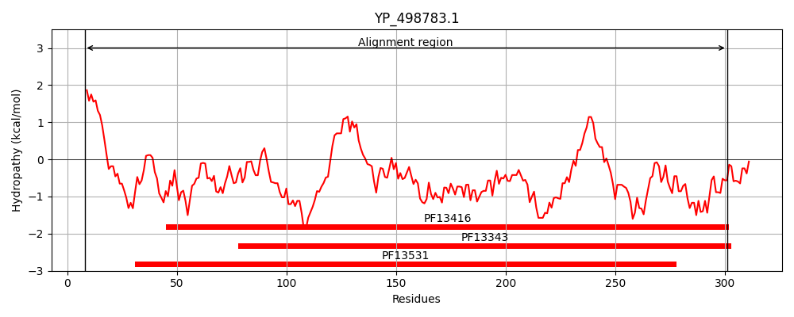
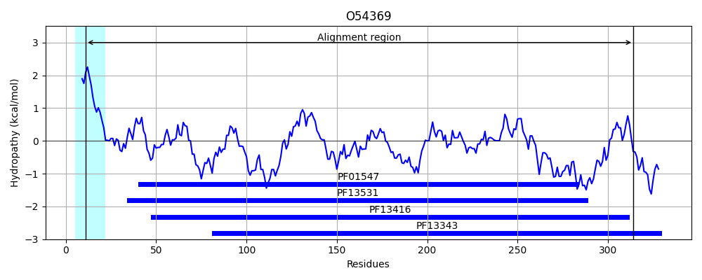
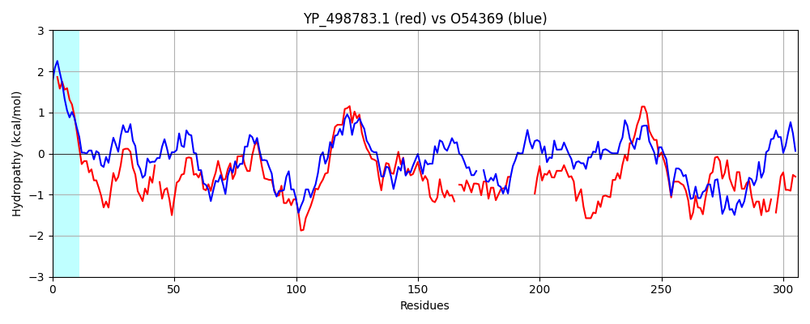

Hit Accession: O54369
Hit TCID: 3.A.1.20.1
Hit Description: gnl|BL_ORD_ID|7342 gnl|TC-DB|O54369|3.A.1.20.1 PERIPLASMIC-IRON-BINDING PROTEIN SHIB - Treponema hyodysenteriae (Serpulina hyodysenteriae).
Mach Len: 306
e:0.000000
Query TMS Count : 0
Hit TMS Count: 1
TMS-Overlap Score: 0.000000
Predicted Substrates:CHEBI:34755;iron(3+)
BLAST Alignment:
Score: 386 , Bit scores: 153 bits, E-value: 5.8e-44, Alignment length: 306, Percentage identity: 29
Query: 8 LLLFLIFLSACANTRHSESDKNVLTVYSPYQSNLIRPILNEFE-KQEHVKIEIKHGSTQVLLSNLHNEDFSERGDVFMGGVLSETIDHPEDFVPYQDTSVTQQLEDYRSNNKYVTSFLLMPTVIVVNSDLQGDIKIRGYQDLLQPILKGKIAYSNPNTTTTGYQHM-RAIYSMHHRVSDVHQFQNHAMQ---------LSKTSKVIEDVAKGKYYAGLSYEQDARTWKNKGYPVSIVYPIEGTMLNVDGIALVKNAHPHPKRKKLVQYLTSRSVQQRLVAEFDAKSIRKDVSEQSD-QSIENLKNI 301
LLL + +C+++ N L +Y P+ I P++++F+ K + ++I T LL + +E + GD+ GG +S + F Y T+ E Y++ +T +P++++VN++L GDIKI GY+DLL P LKGKIA+++P+ +++ ++H+ +Y++ D + ++ + LS +S V + VA G+Y GL++E+ + + G PV +VY EG ++ DGI ++KNA KK V Y TS Q+ + + + +S+R D+ + QS++ + I
Sbjct: 11 LLLSVFIFYSCSSSESGAQSGNSLVIYCPHPLEFINPLVDDFKAKNPGINVDIIAAGTGELLKRVESEKDNPLGDILWGGTISMAKPKIDLFESYTSTNEENIAEIYKNTEGALTRCTAVPSILMVNTNLAGDIKIEGYEDLLNPELKGKIAFADPSASSSSFEHLVNMLYAIGK--GDPEKGWDYVSKLCANLDGKLLSGSSAVYKGVADGEYTVGLTFEEGGANYVSAGSPVKLVYMKEGVIIKPDGIYIIKNAKNLENAKKFVDYATSYDAQKTITDKLNRRSVRGDLPPSAILQSVDTINVI 314 | Protein Hydropathy Plots: |
|---|
|  |  |
Pairwise Alignment-Hydropathy Plot:
|
|---|
|  |